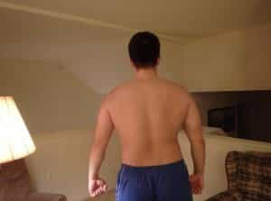
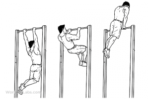
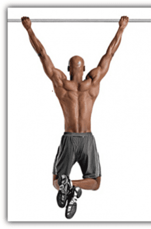
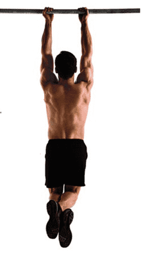
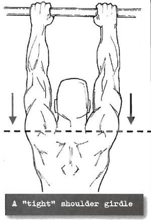
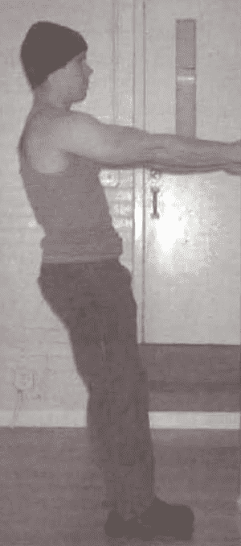
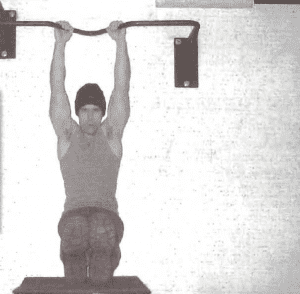
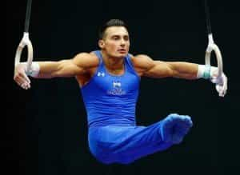

< < < Back
How To Work Up To A One-Armed Pull-Up – Return Of Kings
The humble pull-up is by far one of the best exercises one can do to develop the upper body, for not only does it develop the size and strength of the latissimus dorsi (the big pulling muscles of the back), it also utilizes the entirety of the upper body as assistance and stabilizers: the forearms, hands, biceps, triceps, shoulders, and the abdomen all get a bit of a workout, as do the small muscles that make up the “rotator cuff.”

Indeed, one might humorously say that the pull-up, and all of its variations, are the oldest of all exercises due to the fact that it predates genus Homo—while I cannot say which species it was exactly, at some point our hirsute ancestors found it more advantageous to grasp around arboreal supports rather than claw into them, and claws were gradually superseded by flat nails. This necessitated climbing via pulling the body upwards and over the branch or tree limb-movements that are functionally identical to the modern day anterior-grip (palms-out) pull-up and the muscle-up.
I emphasize “all of its variations” because, like most exercises that are worth doing, there are numerous ways to do the same basic exercise, all of which emphasize one muscle or area or another. Just as there are numerous variations of bench press, squat, deadlift, and push-up, so too are there numerous types of pull-ups.
To clarify, this article will only deal with the traditional pull-up series—smooth, stable pulls that lift the chin over the bar, from wall pulls to the one-handed pull-up. This article will not deal with muscle-ups (which are essentially a pull-up crossed with a dip), towel hangs (which are a hellacious method of forearm training, but do not utilize any pulling motion at all), or the supine pull-up, also called the Australian pull-up.

The Grips
Before I begin discussing the exercise, I must go over the types of grip—more specifically, there are three: anterior grip, posterior grip, and side grip. They differ largely on which muscles of the arm they attack, as all three work the back and torso equally.
The anterior grip has both hands side to side, and the palms facing out. This puts pressure on the triceps, and as such it is usually more difficult for the beginner than the posterior grip pull-up detailed below.

The posterior grip is typically the first one that is achieved by the beginning sportsman. The palms face towards you and it hits the bicep. More accurately, it fully contracts the bicep, hitting the “peak.”

These two grips should be trained by all interested in this exercise, and will serve your needs for functional strength and ability. However, for those seeking aesthetic arms, the side grip can be done, which emphasizes the brachialis and the “short head” of the biceps. Many find this side grip to be more comfortable for one-arm pull-ups as well.
Tight Shoulders
In addition to the grips, a safety precaution that must be done with pull-ups is to keep the shoulders, rotator cuff, and elbows “tight” to prevent injury. This is done by flexing the latissimus dorsi and keeping a slight bend in the elbows. Like most things in fitness, not feeling pain is a sign of doing it right, and pain means you’re making a mistake.

The Pull-Up Series
The pull-up seems like a daunting task for the beginner, and, admittedly, it is. The vast majority of people will not be able to go from a state of having no lat training at all to being able to do a “Dead hang” pull-up. This, of course, necessitates an intermediary step. I myself utilized machines such as the lat pulldown and the barbell row. While I normally avoid machines in all my fitness doings, this is the one time I would possibly make an exception…
However, a better choice would be the calisthenic steps enumerated in Paul Wade’s Convict Conditioning—as stated in previous articles, training the central nervous system to “learn” a specific task is just as important as training the muscles to be strong (which is to say, contract more powerfully), and these steps will do so for those who cannot do a single pull-up. While I was capable of doing a regular pull-up by the time I discovered the book, it helped me learn further steps towards mastery of the one-handed pull-up.
The first step is the Wall Pull. Stand straight, grab a vertical support, and pull yourself towards it. Most of you readers should be strong enough to do this, but for completion’s sake I include this. Do 10 of these and move on.

Then the horizontal pull-lay under a table or something similar, and pull yourself up at an angle. Again, most are already capable of doing this. Do 10 and move on.

Jack-Knife pulls are essentially assisted pullups, where you extend your legs and put them on a chair or another object of similar height, and then pull yourself up. From here on in, the actual pulling maneuver is rather instinctual, and does not need explaining.

Half Pull-ups are the first un-assisted maneuver the trainee will perform-jump up into the “flexed arm hang” position your middle school gym teacher let you do as a consolation for failing the pull-up. Then pull yourself up over the bar, and lower yourself into the flexed hang position. And repeat 10 times and go to the next step.
The true pull-ups, exercises that you wouldn’t be ashamed to do in public, begin here. Just grab the bar, extend your arms to an almost full length (keep a slight kink in your elbows as said above). Then pull until your chin goes over the bar, then lower yourself under control and repeat. I emphasize a controlled lowering, you don’t want to just “crash” down and blow out your elbows. Do 10 of these and move on.

Close grip pull-ups are, as the name implies, regular pull-ups done with the hands touching each other. This takes pressure off of the lats and puts it onto the shoulders and arms. As such, it is the first step towards one-arm pull-ups.
Hand-and-a-half pull-ups are something most of us are familiar with, whether it be from Rocky II or seeing some childhood peer doing these, likely referring to them as “one handed pull-ups.” Grasp the bar with one hand, and grasp that hand’s wrist with the other hand. Then pull up. This forces the hand on the bar to work much harder than the other. Then switch hands. When you can do 10 of these, move on.
The half one hand pull-up sees the return of the chair from Step 3. Get in the jackknife position and hold the arm in the half-flexed position. Then pull up from that position, and lower yourself to the chair. Some are capable of doing this without a chair, similar to the flexed arm hang with two hands, but I was not when I started. As usual, 10 reps.
The assisted one-handed pull-up utilizes a towel. Drape it over the bar, and grab it with one hand. Grab the bar with the other hand and pull up from a “dead hang” until the halfway position. Then let go of the towel while simultaneously continuing to pull up and over the bar. Drop down under control to a dead hang and repeat. Then switch hands. Once you can do 10, take a deep breath and try for the nigh-mythical one-arm pull-up.
The true one-arm pull up is a feat that’s simple in theory, but horrifically difficult in practice. Just grab a bar with one hand and pull with all your might. I myself can just barely do one with my right hand, and I’m still working on the left.
When the one-arm pull-up is complete, you can further progress by doing advanced gymnastic maneuvers with rings, such as the iron cross pictured below. These gymnastic maneuvers are a fascinating field of study and practice in their own right, and deserve several articles for themselves (and, I admit, this also gives me time to master them).

Or, you can add weights to pull-ups-either with two hands or one hand, but as usual I would advise you only add weights to the two-handed pull-up, as I prefer to not add weights to unilateral movement.
But no matter what you do, a strong back is useful for climbing, pulling, punching, or any upper body movement.
Read More: To Pull Hot Girls You Must Make Every Interaction Physical